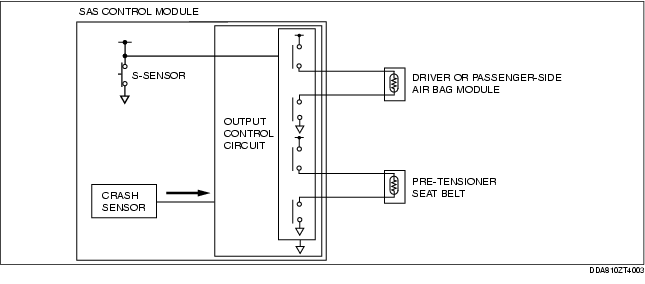
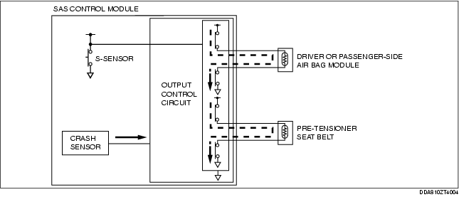
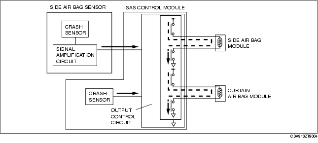

1. The impact of a frontal or frontal offset collision to the vehicle is transmitted to the SAS control module.
2. The safing sensor inside the SAS control module detects the collision and activates. In addition, the crash sensor determines the impact and converts it to an electronic signal and outputs it to the output control circuit.

3. The output control circuit calculates the electronic signals from the crash sensor and the valve is compared with the preset valve. If the output signal received from the crash sensors exceeds the preset value, an ignition circuit is completed and an operation (deployment) signal is sent to both the driver and passenger-side air bag modules.
4. In conjunction with both the driver and passenger-side air bag module deployment, an ignition circuit for the pre-tensioner seat belt is completed and an operation (deployment) signal is sent to the pre-tensioner seat belt.

1. During a lateral collision to the vehicle, the crash sensors in the side air bag sensor and SAS control module detect the collision.
2. The degree of impact detected by the crash sensor in the side air bag sensor is converted to an electrical signal and sent to the SAS control module through the signal amplification circuit.
3. Simultaneously, the SAS control module crash sensor converts the degree of impact detected to an electrical signal.
4. The SAS control module processes the calculations for the two electrical signals at the output control circuit and compares the value to a preset value.
5. The output control circuit determines the degree of impact to the vehicle by the value from the crash sensors, completes a side air bag module and curtain air bag module ignition circuit, and sends the deployment signal to the air bag modules.
